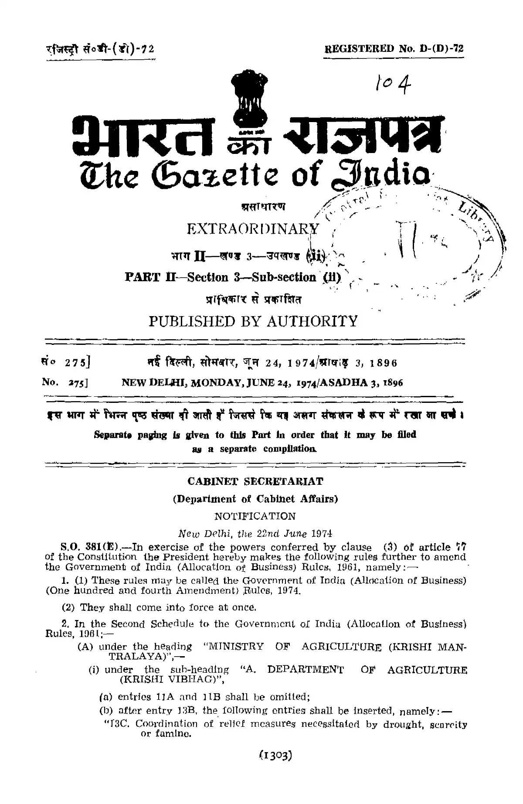
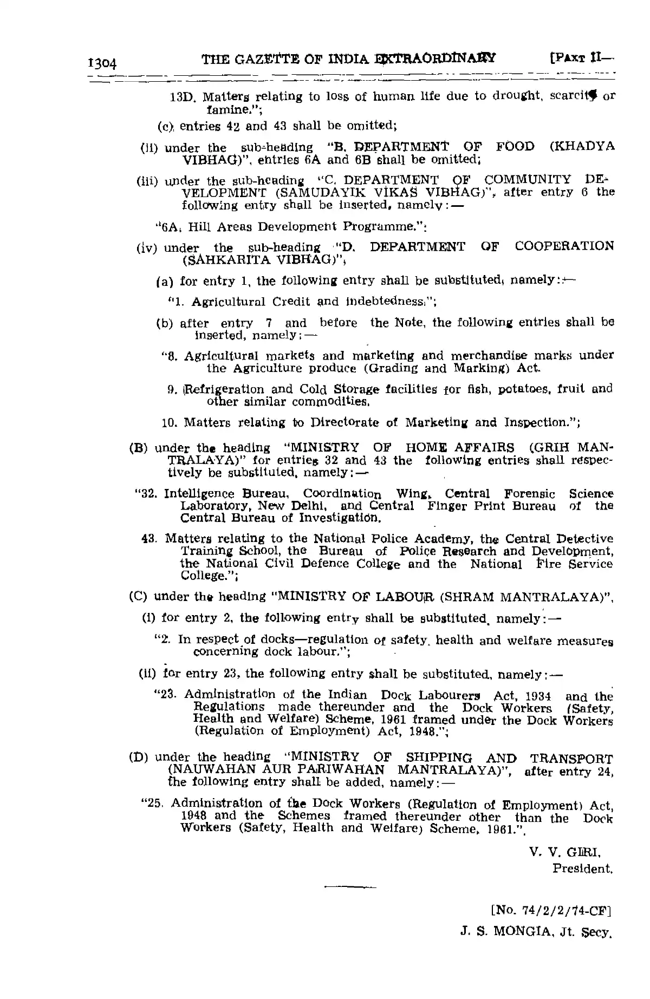
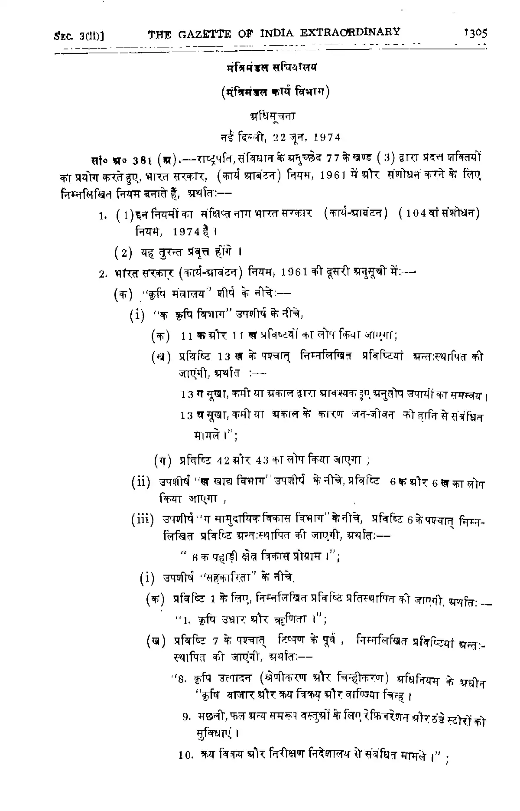
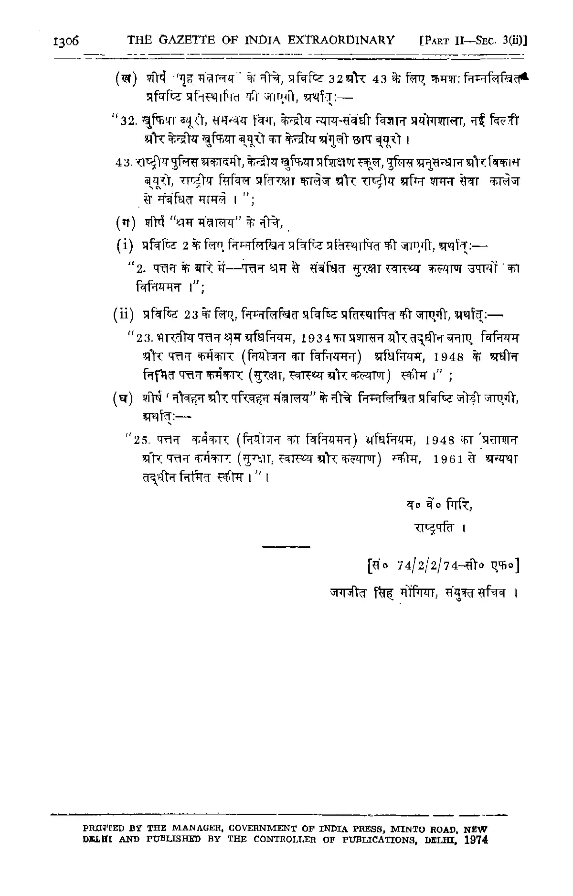

Amendment #104 (S.O. 381(E), 1974)
12 changes: 0 to the First Schedule, 12 to the Second Schedule. 12 applied
The order, page by page
Page 1 of 4

12Schedule 2 › MINISTRY OF AGRICULTURE › DEPARTMENT OF AGRICULTURE › entry 11A; Schedule 2 › MINISTRY OF AGRICULTURE › DEPARTMENT OF AGRICULTURE › entry 11B
applied at schedule 2 › ministry MINISTRY OF AGRICULTURE › department A › part I › entry 11A in the Rules after #104
after Schedule 2 › MINISTRY OF AGRICULTURE › DEPARTMENT OF AGRICULTURE › entry 13B
- T3C. Coordination of relief measures necessitated by drought, scarcity or famine. [PAXT II—
- 13D. Matters relating to loss of human life due to drought, scarcit or famine.
applied at schedule 2 › ministry MINISTRY OF AGRICULTURE › department A › part I › entry 13D in the Rules after #104
read page break
Page 2 of 4

3456789101112Schedule 2 › MINISTRY OF AGRICULTURE › DEPARTMENT OF AGRICULTURE › entry 42; Schedule 2 › MINISTRY OF AGRICULTURE › DEPARTMENT OF AGRICULTURE › entry 43
applied at schedule 2 › ministry MINISTRY OF AGRICULTURE › department A › part IV › entry 42 in the Rules after #104
Schedule 2 › MINISTRY OF AGRICULTURE › DEPARTMENT OF FOOD › entry 6A; Schedule 2 › MINISTRY OF AGRICULTURE › DEPARTMENT OF FOOD › entry 6B
applied at schedule 2 › ministry MINISTRY OF AGRICULTURE › department B › group_heading I › entry 6A in the Rules after #104
after Schedule 2 › MINISTRY OF AGRICULTURE › DEPARTMENT OF COMMUNITY DEVELOPMENT › entry 6
- 6A. Hill Areas Development Programme.
applied at schedule 2 › ministry MINISTRY OF AGRICULTURE › department C › entry 6A in the Rules after #104
Schedule 2 › MINISTRY OF AGRICULTURE › DEPARTMENT QF COOPERATION › entry 1
- 1. Agricultural Credit and indebtedness.
applied at schedule 2 › ministry MINISTRY OF AGRICULTURE › department D › entry 1 in the Rules after #104
after Schedule 2 › MINISTRY OF AGRICULTURE › DEPARTMENT QF COOPERATION › entry 7
- 8. Agricultural markets and marketing and merchandise marks under the Agriculture produce (Grading and Marking) Act.
- 9. Refrigeration and Cold Storage facilities for fish, potatoes, fruit and other similar commodities
- 10. Matters relating to Directorate of Marketing and Inspection.
applied at schedule 2 › ministry MINISTRY OF AGRICULTURE › department D › entry 8 in the Rules after #104
Schedule 2 › MINISTRY OF HOME AFFAIRS › entry 32
- 32. Intelligence Bureau, Coordination Wing, Central Forensic Science Laboratory, New Delhi, and Central Finger Print Bureau of the Central Bureau of Investigation.
applied at schedule 2 › ministry MINISTRY OF HOME AFFAIRS › part I › group_heading The following subjects which are relatable to… in the Rules after #104
Schedule 2 › MINISTRY OF HOME AFFAIRS › entry 43
- 43. Matters relating to the National Police Academy, the Central Detective Training School, the Bureau of Police Research and Development the National Civil Defence College and the National Fire Service College.
applied at schedule 2 › ministry MINISTRY OF HOME AFFAIRS › part I › group_heading The following subjects which are relatable to… in the Rules after #104
Schedule 2 › MINISTRY OF LABOUR › entry 2
- 2. In respect of docks—regulation of safety, health and welfare measures concerning dock labour.
applied at schedule 2 › ministry MINISTRY OF LABOUR › part I › entry 2 in the Rules after #104
Schedule 2 › MINISTRY OF LABOUR › entry 23
- 23. Administration of the Indian Dock Labourers Act, 1934 and the Regulations made thereunder and the Dock Workers (Safety Health and Welfare) Scheme, 1961 framed under the Dock Workers (Regulation of Employment) Act, 1948.
applied at schedule 2 › ministry MINISTRY OF LABOUR › part V › entry 23 in the Rules after #104
after Schedule 2 › MINISTRY OF SHIPPING AND TRANSPORT › entry 24
- 25. Administration of the Dock Workers (Regulation of Employment) Act 1948 and the Schemes framed thereunder other than the Dock Workers (Safety, Health and Welfare) Scheme, 1981.
applied at schedule 2 › ministry Ministry of Shipping and Transport › group_heading IV › entry 25 in the Rules after #104
Page 3 of 4

Page 4 of 4

How this document was read
Changes placed by an inference rule
| Change | Rule | Status | What |
|---|---|---|---|
| 6 | loose | accepted | change 6: department DEPARTMENT QF COOPERATION taken for department DEPARTMENT OF COOPERATION, named loosely |
| 7 | loose | accepted | change 7: department DEPARTMENT QF COOPERATION taken for department DEPARTMENT OF COOPERATION, named loosely |
From the Government of India (Allocation of Business) Rules, 1961 and their amendments, as published by the Cabinet Secretariat (cabsec.gov.in), read by orgpedia. The readings of the older scanned gazettes have known gaps.